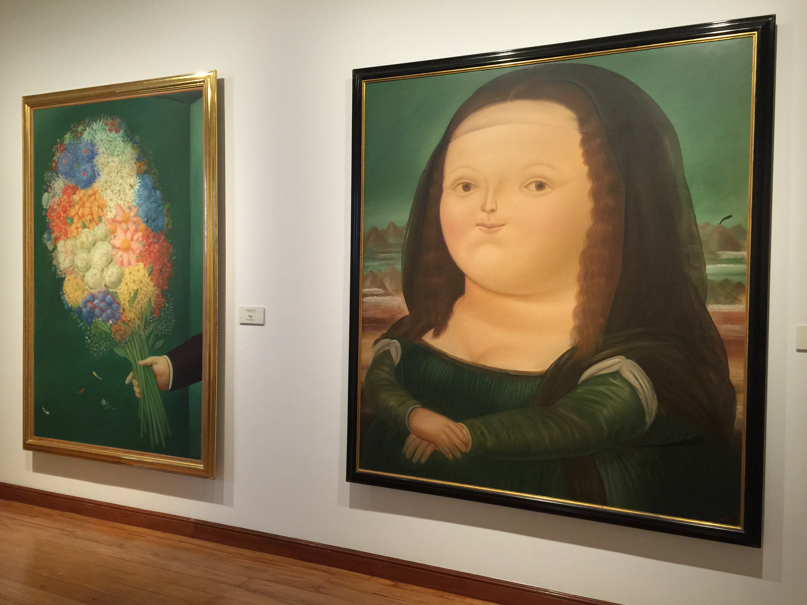
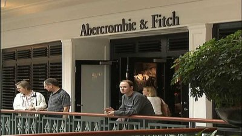

Tell Me I'm Fat - This American Life

It's the idea that fat people would come out to their friends and family as fat. ... this sort of polite secret
So before you declared to others that, yes, she wants them to call her fat
early trauma is so damaging ... “I don't like to eat in front of other people.”
The Fat Trap
Missing: secret
debunked
now I know the truth about Society ...

Missing: Hmm
"Naturally Skinny"
healthier, better, because ... fat!
some secret
helps you build muscle mass while losing fat.
In Defense of Food
you're very young. ... This is what my Mom has always told me to
secret weapon in maintaining a ... hmm ...